Лабораторна робота №0. Основи роботи з Git. Налаштування Git-GitHub середовища
Мета: quick start для роботи з системою контроля версій (СКВ) Git та GitHub.
Лабораторна робота носить загальний характер і буде корисна в рамках будь-якої дисципліни, де планується використовувати СКВ Git як в індивідуальних проектах, так і в командній роботі.
Що ви будете вміти?
- Інсталювати Git, стоврювати локальний Git-репозиторій.
- Створювати репозиторій на GitHub та зв’язувати його з вашим локальним репозиторієм.
- Створювати та налаштовувати R+RStudio+Git+GitHub середовище.
- Створювати та налаштовувати Python+PyCharm+Git+GitHub середовище.
- Працювати з локальним та віддаленим репозиторіями за допомогою Git.
- Відпрацьовувати типові ситуації командної роботи над проектом в середовищі Git-GitHub.
Налаштування Git-GitHub середовища
Інсталяція та налаштування Git
Для інсталяції СКВ Git на локальну машину потрібно перейти на офіційний сайт продукту, скачати актуальну версію та встановити згідно з інструкцією. На сайті є також обширна високоякісна документація по роботі з Git, зокрема Pro Git українською.
Якщо клієнт Git був інстальований вдало, з ним можна працювати шляхом активації GUI, або з консолі Bash. Для цього потрвбно перейти в каталог, де має розміщатися проект, активувати праву кнопку миші та вибрати відповідний режим.
Далі будемо демонструвати роботу з консолі Bash.
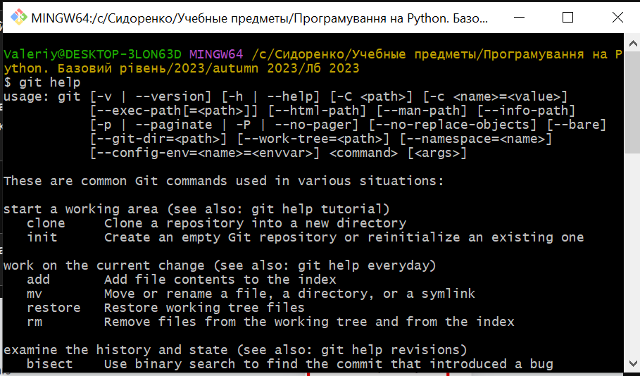
Для виклику довідки по роботі з певною командою Git, можна скористатися однією з команд:
git help <command>git <command> --help
Для початку роботи з Git потрібно виконати налаштування профілю користувача, які записуються в файл з ім’ям .gitconfig профілю користувача.
git config --global user.name <usrname>
git config --global user.email <blablabla@gmail.com>
git config --global core.editor "notepad"
Всі налаштування записуються в текстовий файл .gitconfig, тобто його можна редагувати і напряму.
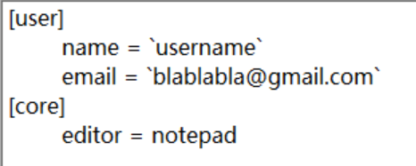
Для перегляду всіх налаштувань можна скористатися командою
git config -l
Для виходу з режиму перегляду налаштувань натиснути Q.
Створення репозиторію на GitHub
Для створення репозиторію на GitHub можна, наприклад, зайти до свого акаунта натиснути + у првому верхньому куті екрана та вибрати пункт випадаючого меню New repositiry:
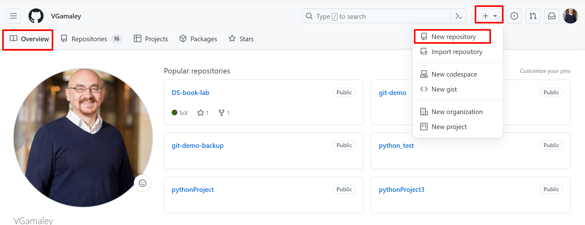
Вводемо можливі параметри налаштування та натискаємо кнопку Create repository: 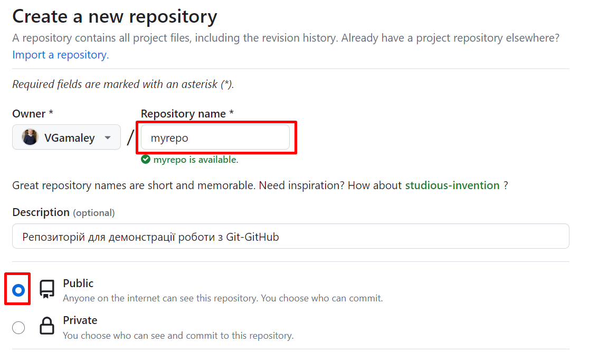 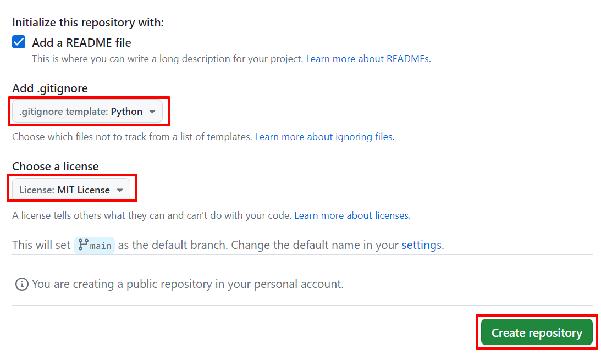
У результаті в нашому акаунті на GitHub буде створено публічний репозиторій з ім’ям myrepo, з налаштованим для роботи з python-проектом файлом .gitignore (див. нижче), з файлом опису проекта на Markdown readme та під MIT License:
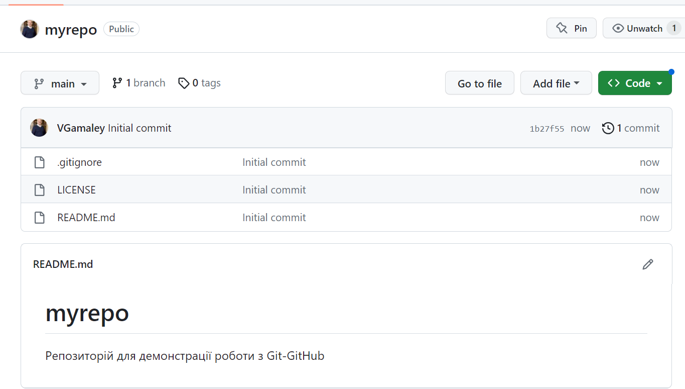
Маємо один єдиний коміт у одну єдину існуючу гілку з ім’ям main (назва у попередніх версіях Git master).
Налаштування доступу до GitHub за https-протоколом
Згідно з недавніми змінами у політиці GitHub, для роботи з відддаленим репозиторієм за https-протоколом, ми маємо згенерувати токен. Для цього потрібно перейти до розділу налаштування профіля Settings і далі в Developer settingsaccess tokens(classic) і згенерувати токен на певний термін. Токен потрібно зберегти, щоби можна його було ввести один раз при першій спробі зв’язатися з віддаленим репозиторієм.
Налаштування доступу до GitHub за SSH-протоколом
Для демонстарції командної роботи з віддаленим репозиторієм ми створимо два каталоги 1 та 2, за дпомогою яких будемо імітувати роботу двох різних клієнтів 1 та 2. В них ми клонуємо створений віддалений репозиторій myrepo.
І типова ситуація: клонування віддаленого репо з GitHub на локальну машину
Уявімо, що ми клієнт 1 (див. примітку вище). Для цього перейдемо в каталог 1.
Розглянемо першу типову ситуацію: у нас є віддалений репозиторій (створений нами, чи кімось іншим) і необхідно його клонувати на нашу локальну машину для подальшою індивідуальної чи командної роботи з можливістю зв’язку з цим віддаленим репозиторієм.
Для цього необхідно зробити наступні кроки:
скопіювати адресу архіву (при цьому необхідно мати на увазі, який протокол далі буде налаштовано для доступу до GitHub); 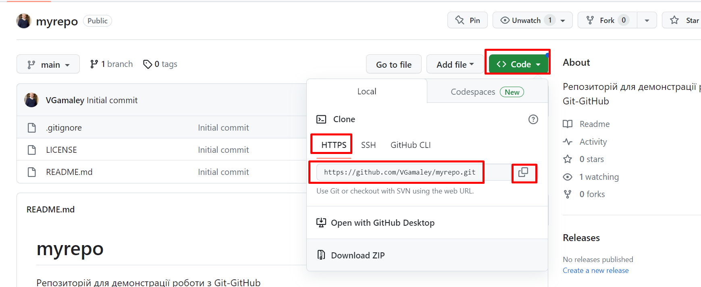
виконати команду в консолі
git clone https://github.com/VGamaley/myrepo.git;
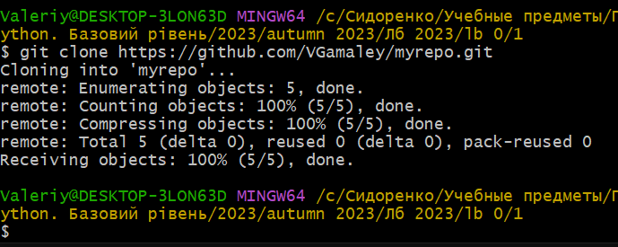
У результаті в каталозі 1 з’явиться каталог myrepo з відомим нам вмістом. Наявність прихованого каталогу .git говорить про те, що проект, який знаходиться в цьому каталозі, взято під контроль Git:
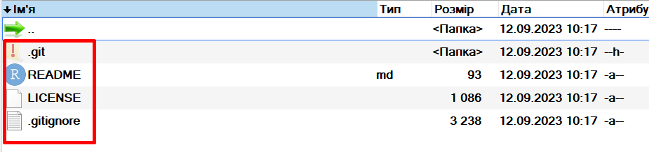
Для роботи з проектом перейдемо до нього. Команда git branch дозволяє з’ясувати наявні гілки, та в якій гілці ми знаходимося:
git branch
Для того, щоби перевірити, з яким віддаленим каталогом зв’язаний (якщо зв’язаний) наш проект на локальній машині, потрібно виконати команду:
git remote -v
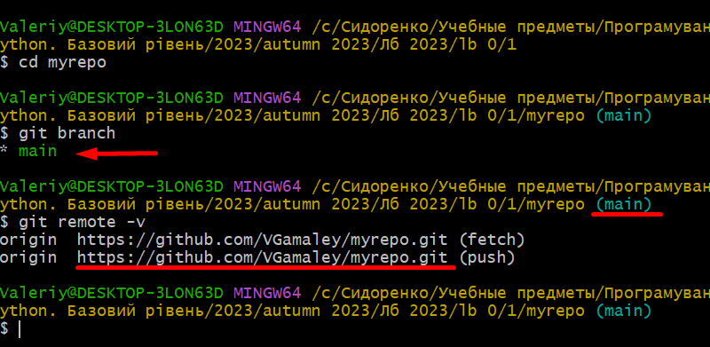
Ми бачимо, що у нас є єдина гілка з ім’ям за замовчуванням main, де ми і знаходимося, і аліас origin віддаленого репозиторію за замовчанням.
Таким чином маємо налаштоване середовище “проект myrepo на локальній машині, взятий під контроль Git – віддалений репозиторій myrepo на GitHub”.
Ситуація може бути іншою: на локальній машині вже створено проект і його взято під контроль Git. Задача полягає в тому, щоби зв’язати його с існуючим репозиторієм на GitHub. Розглянемо цю задачу.
ІІ типова ситуація: зв’язування існуючого локального репо з віддаленим на GitHub
Уявімо, що ми клієнт 2 (див. примітку вище). Для цього перейдемо в каталог 2.
Виконаємо ініціалізацію нового Git-репозиторію в середині каталогу 2, виконавши наступну команду:
git init
Після цього в поточному каталозі з’явиться лише прихована папка .git, а команда git remote -v покаже, що не існую зв’язку з жодним віддаленим репозиторієм:
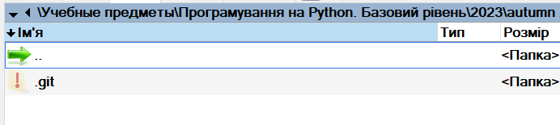
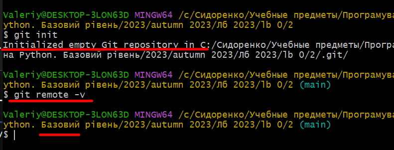
Для зв’язування поточного репозиторію з віддаленим можна скористатися такою командою:
git remote add <nickname> <url>
Ми, таким чином, створемо зв’язок, вказавши в якості нікнейма аліас, наприклад, ivan, адресу нашого віддаленого репозиторію і перевіряємо результат:
git remote add ivan https://github.com/VGamaley/myrepo.git
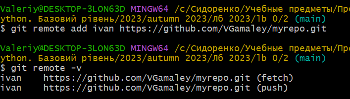
Для завершення процедури потрібно “потягнути” (pull) поточний вміст віддаленого репозиторію, з яким в становлено зв’язок, до нашого локального. Це можна виконати за допомогою команди git pull <nickname> <branch_name>:
git pull ivan main
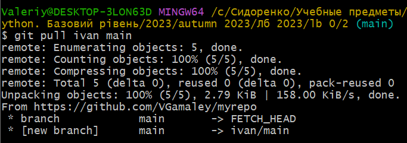
Таким чином маємо налаштоване середовище “проект 2 на локальній машині, взятий під контроль Git – віддалений репозиторій myrepo на GitHub”.
Якщо потрібно б було досягнути абсолютно ідентичного результату як при клонуванні, потрібно б було створити в каталозі 2 каталог myrepo і ініціалізувати в ньому Git-проект, а потім підтягнути до нього вміст віддаленого mrepo.
Робота у Git-GitHub середовищі в рамках індивідуального проекту
Робота у Git-GitHub середовищі в рамках командного проекта
І типовий сценарій
ІІ типовий сценарій
ІІІ типовий сценарій
ІV типовий сценарій
Робота з Git GUI
Створення та налаштування R+RStudio+Git+GitHub середовища
Створення та налаштування Python+PyCharm+Git+GitHub середовища
Завдання для самостійної роботи
Контрольні запитання
Що таке система контроля версій (СКВ) і для чого вона призначена? У чому принципова відмінність СКВ SVN та GIT?
Що відбувається при виконанні команди
git add .?Що відбувається при виконанні команди
git commit?Якою Git-командою виконується розміщення локальної копії Git-репозиторію проєкта на віддаленому, що знаходиться на GitHub?
Основні команди Git
git update-git-for-windows - апдейт клієнта Git
it help <command> git <command> help - довідка по команді
git version - перевірка версії
І Створення репо і зв’язування його з віддаленим
git init - створення репозиторію
git remote add ivan git://github.com/../other.git - зв’язування створеного репозиторію з віддаленим (аліас ivan)
git pull ivan - скачування вмісту з віддаленого
ІІ Клонування віддаленого у поточну папку з автоматичним зв’язуванням
git remote -v - показати віддалений репозиторій
git clone https://github.com/schacon/simplegit-progit - клонування репозиторію
git add readme.txt - додавання readme.txt файлу в індекс
git add . - додавання всіх файлів у індекс
git status - статус репо
git status -s - статус репо (short version)
git commit - відкриття редактора за замовчанням
git commit - m "comment" - комміт (фіксація змін) з коментарем